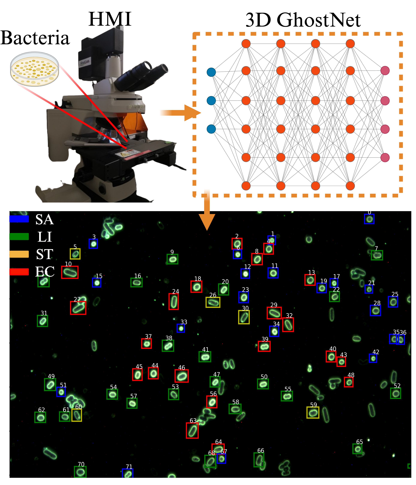

Rui Kang
I am currently employed at NJAU, Nanjing, where I work on hyperspectral microscopic imaging, agri-food rapid detection technology, and deep learning, etc. Before that, I also did my Master and PhD at College of Engineering at NJAU, where I was co-advised by Prof. Kunjie Chen and Prof. Bosoon Park. I was funded by CSC and worked at USDA as a senior visiting scholar for two years. After 2020, I was employed at JAAS, where I conducted research related to smart agriculture. In 2023, I was appointed as a visiting professor at McGill University, collaborating with Professor Shangpeng Sun to develop a high-performance optical phenotyping platform for plants. In 2024, I was recruited as a globally high-level talent by Nanjing Agricultural University and appointed as an associate professor, where I engage in both scientific research and teaching activities.
Email / Google Scholar / Research Gate /
News
Recent Projects
Currently, I am working on devoloping smart algorithms to accelerate the detection of foodborne pathogens occured in various food matrics. I also start to build tiny and intelligent optical systems to ensure the food quality and safety. We are now searching for the advanced optical imaging and sensing techniques for smart farming.

Supported by NSFC, No 321016482
In this project, we combined advanced deep learning framework with hyperspectral and microscope technology to identify various foodborne bacteria. This technology can realize non-invasive classification of foodborne pathogens at the single-cell level, this digital diagnostic approach has potential for commercial applications.

In this project, we developed rapid optical detection methods for plant phenotyping in both indoor and field towards real-world scenery, especially for the health monitoring task for cherry tomato growths. The advanced optical sensors and mobile platforms have been developed to meet the requirements in various tasks.

In this project, we proposed a totally intelligent automation solution for growing tomatoes in the green house. By adopting our methods, the distributed processing equipment will be centrally managed and controlled automatically.
Talks
Research
I'm interested in developing efficient intelligent tools for smart agriculture implementation (e.g. classification, detection, and spatial-spectral fusion) using optical, automatic, and robotic devices.
Publications:
- Rapid identification of foodborne bacteria with hyperspectral microscopic imaging and artificial intelligent classification algorithms
Rui Kang, Bosoon Park, Qin Ouyang, Ni Ren
Food Control 2021 | Paper - Physicochemical indicators coupled with multivariate analysis for comprehensive evaluation of matcha sensory quality
Jizhong Wu, Qin Ouyang, Bosoon Park, Rui Kang, Bosoon Park, Zhen Wang, Quansheng Chen
Food Chemistry 2021 | Paper - Simultaneous quantification of chemical constituents in matcha with visible-near infrared hyperspectral imaging technology
Qin Ouyang, Li Wang, Bosoon Park, Rui Kang, Bosoon Park, Quansheng Chen
Food Chemistry 2021 | Paper - Classification of foodborne bacteria using hyperspectral microscope imaging technology coupled with convolutional neural networks
Rui Kang, Bosoon Park, Qin Ouyang, Kunjie Chen
Applied Microbiology and Biotechnology 2020 | Paper - Assessment of matcha sensory quality using hyperspectral microscope imaging technology
Qin Ouyang, Li Wang, Bosoon Park, Rui Kang, Zhen Wang, Quansheng Chen, Zhiming Guo
LWT 2020 | Paper - Single-cell classification of foodborne pathogens using hyperspectral microscope imaging coupled with deep learning frameworks
Rui Kang, Bosoon Park, Matthew Eady, Qin Ouyang, Kunjie Chen
Sensors and Actuators B: Chemical 2020 | Paper - An experimental study of stunned state detection for broiler chickens using an improved convolution neural network algorithm
Changwen Ye, Zhenwei Yu, Rui Kang, Khurram Yousaf, Chao Qi, Kunjie Chen, Yuping Huang
Computers and Electronics in Agriculture 2020 | Paper - A novel hyperspectral microscope imaging technology for rapid evaluation of particle size distribution in matcha
Qin Ouyang, Yongcun Yang, Bosoon Park, Rui Kang, Quansheng Chen, Zhiming Guo, Huanhuan Li
Journal of Food Engineering 2021 | Paper - Identifying non-O157 Shiga toxin-producing Escherichia coli (STEC) using deep learning methods with hyperspectral microscope images
Rui Kang, Bosoon Park, Kunjie Chen
Spectrochimica Acta Part A: Molecular and Biomolecular Spectroscopy 2019 | Paper - Automatic Identification of Asian Rice Plant-Hopper Based on Image Processing
Jialiang Wang, Rui Kang, Kunjie Chen, Deying Liu, Haiming Yu
Applied Engineering in Agriculture 2017 | Paper - Development of Online Detection and Processing System for Contaminants on Chicken Carcass Surface
Rui Kang, Kai Yang, Xiaxia Zhang, Wei Wu, Kunjie Chen
Applied Engineering in Agriculture 2016 | Paper